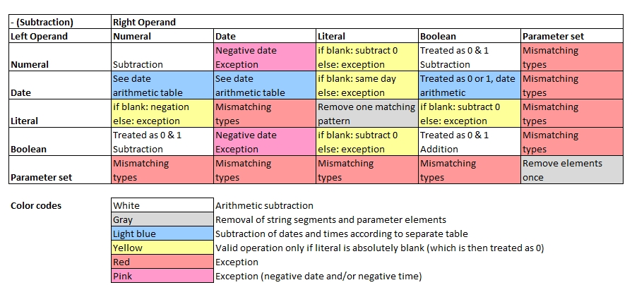
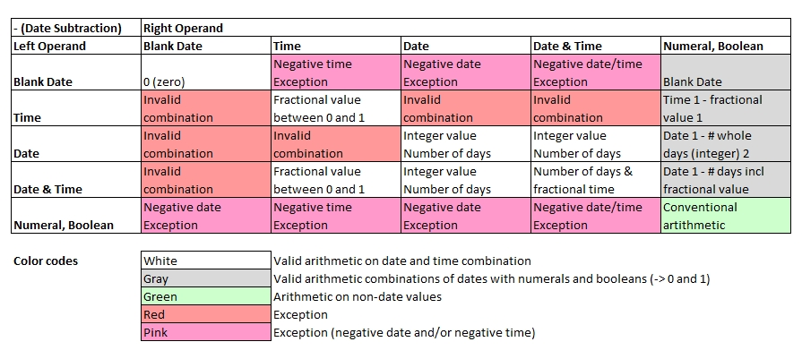

Introduction
Basic rules to subtractions:
- Numbers are subtracted from each other as learnt at school.
- Boolean values are converted to 0 and 1 first.
- Literal strings: The first occurrences of the (sub-)string in the right operand found in the left operand will be removed, but not all.
- Parameter sets: The first occurrences of the elements in the right operand found in the left operand will be removed, but not all.
- Special rules apply on arithmetics with dates and times which are described further below.
- Special rules apply to some operations with different data types. See the table below for details.

a[0] = 5 - 3;
a[1] = Hello - ell;
a[2] = 0.5 - true;
a[3] = { a, b, c, c } - { c, d }; // Removes one c, not all
for all variables( a[], b[] ) echo( b[] );2
Ho
-0.5
{'a','b','c'}
Subtraction of Dates
Note that value of type date may assume 4 states: date only, time only, date and time combined and blank date (no value). Even for the same operator,
the rules of calculating dates and numeric operands differ.

'Date 1' and 'Time 1' refer to the data from the left operand whereas 'Date 2' and 'Time 2' refer to the right operand.
1 Only fractional part (digits behind decimal point) are used to add time value. Value must be between 0 and (24*60*60-1)/(24*60*60). Calculated sum must lie within 00:00:00 and 23:59:59.
2 Only the integer (whole number before decimal point) is used for the calculation.
3 Sorting order across different data types: parameter set > literal > date > numeral > boolean, then followed by contents if types are equal. For sets with common contents and different lengths,
the longer one is considered as the "greater" one. Nested sets will also be sorted.
d [] = date('2020-07-14');
dt[] = date('2020-07-14 12:30:00');
t [] = date('09:15:00');
o [] = date(''); // blank date
a[0] = d[] - 3.25; // Just integer is used
a[1] = dt[]- 3.25; // 3 days, 6 hours
a[2] = t[] - 0.25; // 6 hours
a[3] = d[] - true; // subtract 1 day
for all variables( a[], b[] ) echo( b[] );2020-07-11
2020-07-11 06:30:00
03:15:00
2020-07-13